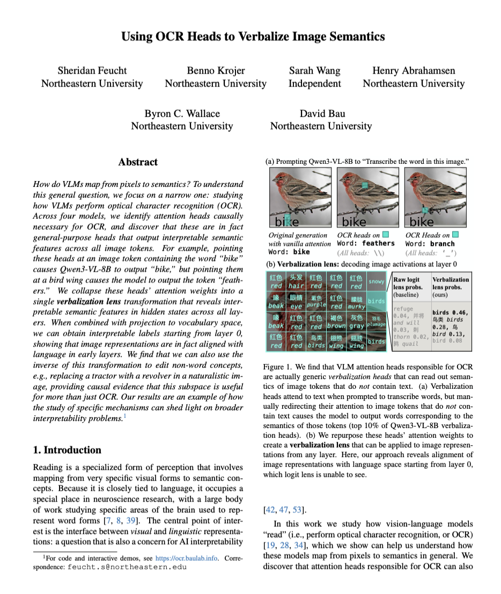
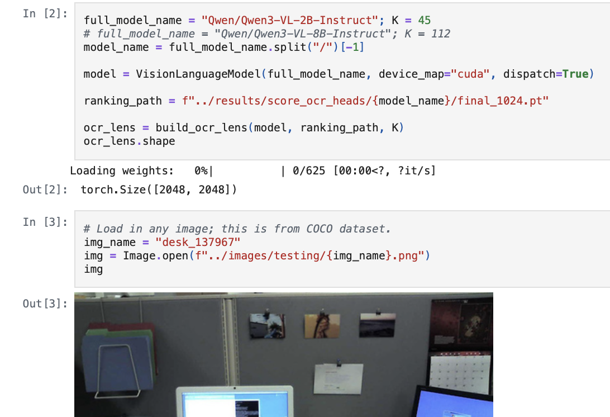
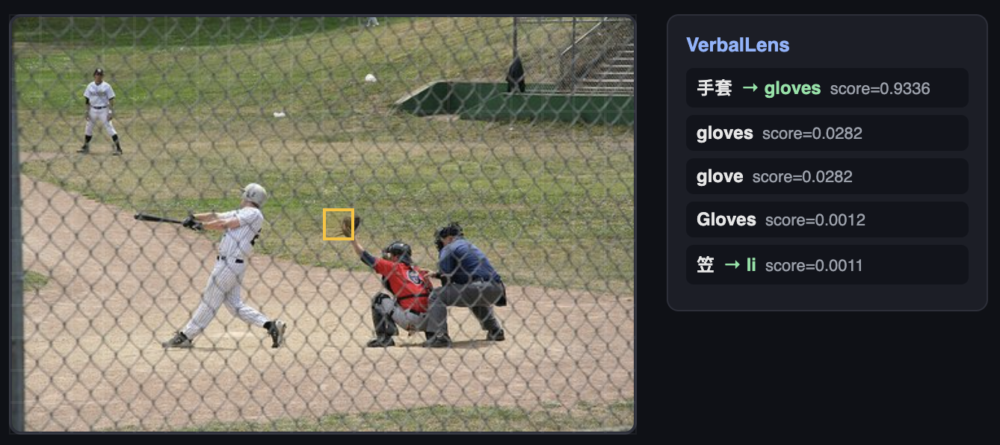
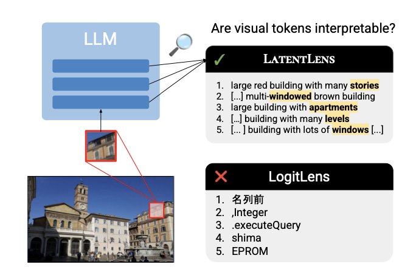
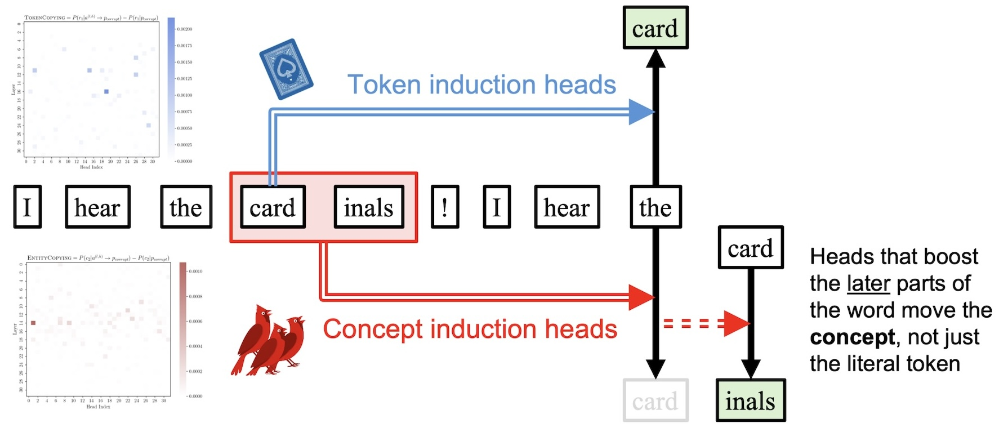

  
ArXiv Paper
GitHub
Source Code
Verbalization Lens Demo
How do VLMs map from Pixels to Semantics?
In this work, we identify attention heads in vision-language models (VLMs) that are responsible for "reading" text in images. We find a set of attention heads that, e.g., attend to the word "bike" when prompted to transcribe the text in the below image. Surprisingly, if you redirect these heads to attend to
Interactive Demo: Click Around Real Images
We've pre-computed verbalization lens results for a few natural images, shown below. Each square in an image corresponds to an image token passed to the VLM: pick a model, an image, and a layer, then click a square to see what that image token decodes to under our verbalization lens compared to a raw logit lens. TODO: You can also check out NDIF to run our approach on images of your choice!
Verbalization Lens
Logit Lens
Scores are softmax probabilities over the model's vocabulary; words are shaded by probability (darker = higher).
Finding Verbalization Heads
Editing Image Perception
Related Work

This work provides a different way of visualizing image tokens by measuring cosine similarity with latent in-context representations of natural language (e.g., image captions).

We adapt the "Concept Lens" method from this prior work. While they used this approach to understand concept induction heads in LLMs, we apply it to image tokens in VLMs.
Authors, authors. Title. Year.
Notes:
Authors, authors. Title. Year.
Notes:
How to cite
This work is currently under review. It can be cited as follows:
bibliography
Sheridan Feucht, Benno Krojer, Sarah Wang, Henry Abrahamsen, Byron Wallace, and David Bau. "Using OCR Heads to Verbalize Image Semantics." arXiv:TODO (2026).
bibtex
@article{
feucht2026ocr,
title={Using OCR Heads to Verbalize Image Semantics},
author={Sheridan Feucht and Benno Krojer and Sarah Wang and Henry Abrahamsen and Byron Wallace and David Bau},
journal={arXiv preprint},
year={2026},
url={https://arxiv.org/abs/TODO}
}